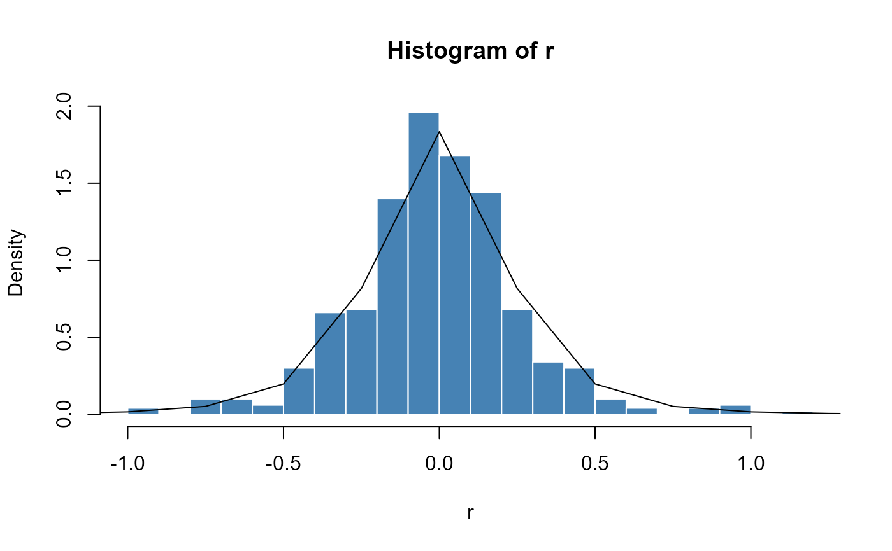
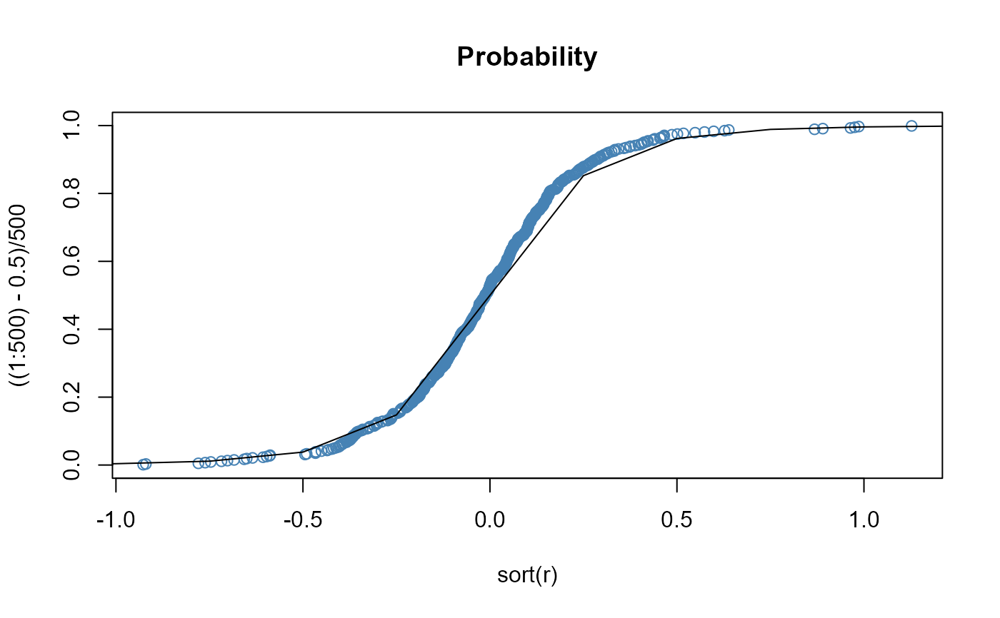

Generalized Lambda Distribution
dist-gld.RdDensity, distribution function, quantile function and random generation for the generalized lambda distribution.
Usage
dgld(x, lambda1 = 0, lambda2 = -1, lambda3 = -1/8, lambda4 = -1/8, log = FALSE)
pgld(q, lambda1 = 0, lambda2 = -1, lambda3 = -1/8, lambda4 = -1/8)
qgld(p, lambda1 = 0, lambda2 = -1, lambda3 = -1/8, lambda4 = -1/8)
rgld(n, lambda1 = 0, lambda2 = -1, lambda3 = -1/8, lambda4 = -1/8)Details
dgld gives the density,
pgld gives the distribution function,
qgld gives the quantile function, and
rgld generates random deviates.
Examples
## rgld -
set.seed(1953)
r = rgld(500,
lambda1=0, lambda2=-1, lambda3=-1/8, lambda4=-1/8)
plot(r, type = "l", col = "steelblue",
main = "gld: lambda1=0 lambda2=-1 lambda3/4=-1/8")
## dgld -
# Plot empirical density and compare with true density:
hist(r, n = 25, probability = TRUE, border = "white",
col = "steelblue")
x = seq(-5, 5, 0.25)
lines(x, dgld(x,
lambda1=0, lambda2=-1, lambda3=-1/8, lambda4=-1/8))

## pgld -
# Plot df and compare with true df:
plot(sort(r), ((1:500)-0.5)/500, main = "Probability",
col = "steelblue")
lines(x, pgld(x,
lambda1=0, lambda2=-1, lambda3=-1/8, lambda4=-1/8))

## qgld -
# Compute Quantiles:
qgld(pgld(seq(-5, 5, 1),
lambda1=0, lambda2=-1, lambda3=-1/8, lambda4=-1/8),
lambda1=0, lambda2=-1, lambda3=-1/8, lambda4=-1/8)
#> [1] -5 -4 -3 -2 -1 0 1 2 3 4 5